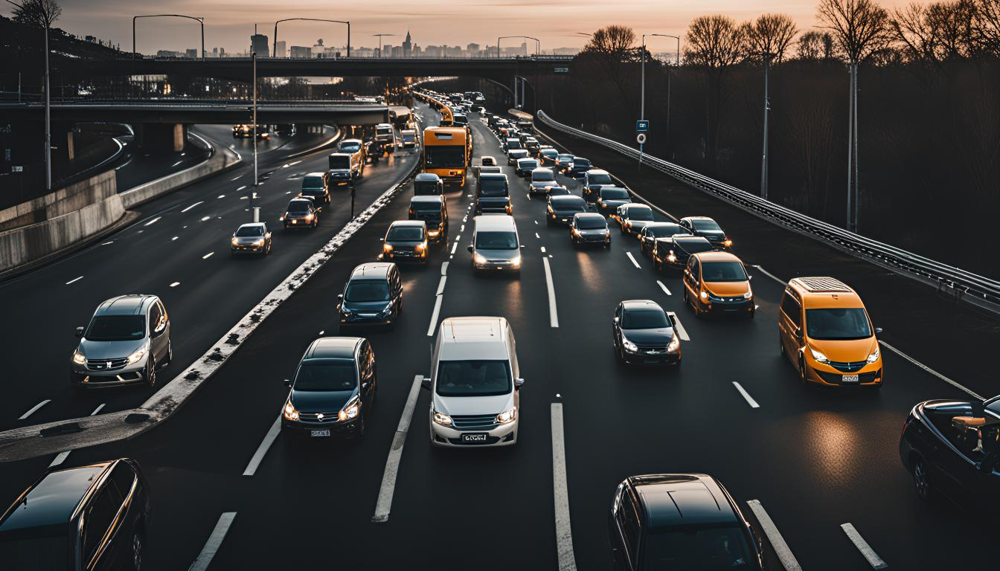

10/04/2025
Akıllı Şehirlerde Görüntü İşleme: Nasıl Bir Dönüşüm Sunuyor?
Günümüzde, teknolojinin hızla ilerlemesiyle birlikte akıllı şehirler, yaşam kalitesini artıran ve kentsel hizmetleri optimize eden çözümler sunmaktadır. Akıllı şehirlerde görüntü işleme teknolojileri, trafik ve güvenlik sistemlerinde devrim yaratmaktadır. Bu yazımızda, yapay zeka destekli görüntü işleme tekniklerinin trafik yönetimine nasıl modern çözümler getirdiğini ve güvenlik sistemlerindeki rolünü detaylı bir şekilde ele alacağız. Akıllı şehirlerin bu yenilikçi dönüşümü, günlük hayatımızda nasıl bir fark yarattığını ve bu teknolojilerin geleceğe nasıl yön vereceğini keşfedin.
Şehir altyapılarının daha verimli ve duyarlı hale gelmesinde akıllı şehirlerde görüntü işleme teknolojisi kilit bir rol oynamaktadır.
Bu teknoloji, trafik akışını optimize etmek, güvenlik önlemlerini artırmak ve şehir hizmetlerinin kalitesini iyileştirmek için kullanılıyor. Görüntü işlemenin entegrasyonu, şehir yaşamının her alanında etkileşimli ve entegre çözümler sunarak, şehir yönetimini daha etkin bir biçimde yapmamıza olanak sağlıyor.
Gelişmiş yapay zeka algoritmalarının yardımıyla, kameralar aracılığıyla toplanan veriler anında işlenerek, trafik ve halka açık alanlarda olabilecek olaylara karşı hızlı bir şekilde müdahale edilmesi mümkün hale geliyor. Örneğin, trafik yoğunluğunun otomatik olarak tespit edilmesi ve buna bağlı olarak ışık zamanlamalarının ayarlanması, trafik akışını sürekli olarak optimize edebilir.
Bunun yanı sıra, güvenlik kameraları aracılığıyla gerçekleştirilen sürekli gözetim sayesinde, şüpheli hareketler anında tespit edilerek ilgili makamlara bildirilebiliyor. Bu durum, suç oranlarının azaltılmasına ve genel olarak daha güvenli şehir ortamlarının oluşturulmasına katkıda bulunuyor.
Toplu taşıma optimizasyonu açısından ise, görüntü işleme teknolojileri, insanların otobüs ve tren istasyonlarındaki yoğunluklarını analiz ederek, araç sefer sayılarının daha iyi planlanmasına olanak tanıyor. Bu da hem enerji tasarrufu sağlamakta hem de şehir içi trafiğin daha akıcı hale gelmesine yardımcı olmaktadır.
Trafik Yönetimi İçin Yapay Zeka Destekli Görüntü İşleme Teknikleri
Akıllı şehirlerde görüntü işleme teknolojisi, trafik yönetimi sistemlerinin daha akıllı ve verimli hale gelmesine olanak sağlıyor. Bu teknikler, trafik akışını analiz ederek yollar üzerindeki araç yoğunluğunu gerçek zamanlı olarak izleyebilir. Böylece, trafik sıkışıklığını azaltmak ve araç geçiş sürelerini optimize etmek için stratejik kararlar alınabilir.
Yapay zeka, çeşitli sensörlerden ve güvenlik kameralarından gelen verileri işleyerek karmaşık trafik senaryolarını anlamada büyük bir rol oynar. Örneğin, AI destekli sistemler, kaza veya yavaşlama gibi olayları tespit edip, bu bilgileri trafik ışıklarını kontrol eden merkezi sistemlere iletebilir. Bu durum, trafik akışının daha akıcı hale gelmesini sağlar.
Buna ek olarak, görüntü işleme teknolojileri toplu taşıma optimizasyonunda da kullanılmaktadır. Otobüs ve tren istasyonları gibi noktalarda, insan akışını ve yoğunluğunu izlemek için kullanılan görüntü işleme sistemleri, toplu taşıma araçlarının doluluk oranlarını belirleyebilir ve sefer sıklıklarının ayarlanmasında büyük rol oynar.
İlerleyen teknoloji ile birlikte, akıllı trafik yönetim sistemleri, şehir altyapılarındaki etkinlikleri artırmak için daha da entegre hale gelecektir. Bu da yapay zeka yardımıyla gerçekleştirilen veri toplama ve analiz işlemleri sayesinde mümkün olacak. Sonuç olarak, akıllı şehirlerdeki trafik yönetimine yönelik bu yüksek teknolojili yaklaşımlar, şehir yaşamını daha da iyileştirmek için büyük potansiyele sahiptir.
Güvenlik Sistemlerinde Görüntü İşlemenin Rolü ve Avantajları
Akıllı şehirlerde görüntü işleme teknolojisi, güvenlik sistemlerinin temel taşlarından biri haline gelmiştir. Şehir güvenliğinin sağlanması, suç oranlarının azaltılması ve halkın daha güvende hissetmesi için kritik bir rol oynar. Görüntü işleme kullanılarak, güvenlik kameralarından elde edilen veriler çok daha etkin bir şekilde analiz edilebilmektedir.
Bu teknoloji, yapay zeka algoritmalarıyla desteklenerek, şüpheli aktiviteleri ve potansiyel tehlikeleri saniyeler içinde tespit edebilir. Örneğin, terk edilmiş bir çanta veya normalden farklı hareketler güvenlik kameraları tarafından anında algılanabilir. Böylece, olası bir tehdidin başlamadan önlenebilmesi mümkün hale gelir.
Kamera görüntülerinin sürekli izlenmesi, büyük veri analizi gerektirdiği için görüntü işleme teknikleri devreye girer. Bu teknikler sayesinde, güvenlik personeli her bir kamera ekranına saatlerce bakmak zorunda kalmadan, sadece potansiyel risk taşıyan durumlar hakkında bilgilendirilir. Bu da kaynakların daha verimli kullanılmasını sağlar.
Bunun yanı sıra, akıllı şehir güvenlik sistemleri, yüz tanıma ve plaka tanıma gibi fonksiyonlar ile de desteklenebilir. Yüz tanıma teknolojisi sayesinde, aranan şahıslar kalabalık bir alanda bile hızla tespit edilebilir. Plaka tanıma teknolojisi ise özellikle otopark yönetimi ve trafik kontrolünde büyük kolaylık sağlar.
Netice itibarıyla, akıllı şehirler kapsamında geliştirilen görüntü işleme destekli güvenlik sistemleri, şehir altyapılarını daha da güçlendirerek, yaşam kalitesini artırırken suçla mücadelede de etkin bir araç haline gelmiştir. Böylece şehirler daha yaşanabilir, daha güvenli hale gelmektedir.
Akıllı Şehirler ve Görüntü İşleme ile Geleceğe Adım Atın
Özellikle akıllı şehirlerde, görüntü işleme teknolojileri, şehir altyapılarının daha verimli ve etkili bir şekilde yönetilmesini sağlamaktadır. Yapay zeka destekli bu sistemler, trafikten güvenliğe kadar birçok alanda şehir yaşamını iyileştirmek için kullanılmaktadır.
Akıllı şehirlerde görüntü işleme sayesinde, trafik akışının daha akıllıca yönetilmesi mümkün hale gelmiştir. Kamera sistemleri üzerinden elde edilen veriler, yapay zeka tarafından analiz edilerek trafik sıkışıklığının önlenmesi, kaza oranlarının azaltılması ve toplu taşıma optimizasyonu sağlanmaktadır. Bu optimizasyonlarla birlikte, vatandaşların günlük yaşamlarında önemli ölçüde zaman tasarrufu sağlanmakta ve çevresel etkiler azaltılmaktadır.
Güvenlik açısından da görüntü işleme teknolojileri oldukça önemlidir. Akıllı kamera sistemleri, şüpheli hareketleri algılayarak güvenlik güçlerine zamanında bilgi verebilmekte, böylece hızlı ve etkili müdahaleler mümkün olmaktadır. Ayrıca, güvenlik kameraları aracılığıyla toplanan veriler, suç oranlarının analiz edilmesi ve önlenmesi açısından değerli bilgiler sunmaktadır.
Akıllı şehirlerde görüntü işleme sistemlerinin entegrasyonu, şehir yaşamını daha güvenli, daha verimli ve daha sürdürülebilir kılmaktadır. Bu teknolojiler, akıllı şehirlerin vazgeçilmez bir parçası olarak, gelecekte şehir yaşamını şekillendirmeye devam edeceklerdir.
Sık Sorulan Sorular
Akıllı şehirlerde görüntü işleme teknolojisi nasıl kullanılır?
Akıllı şehirlerde görüntü işleme teknolojisi, trafik yönetimi, güvenlik sistemleri, kalabalık analizi ve yüz tanıma
gibi birçok alanda kullanılmaktadır. Bu teknoloji, kameralardan alınan görüntülerin analiz edilmesiyle, trafik
akışının optimize edilmesi, suçların önlenmesi ve şehir yönetiminin daha etkin bir şekilde yapılabilmesi için önemli
bilgiler sağlar.
Görüntü işleme teknolojisi trafik sistemlerini nasıl iyileştirir?
Görüntü işleme, trafik kameraları aracılığıyla elde edilen verileri işleyerek trafik yoğunluğunu ve akışını analiz
eder. Bu sayede trafik sinyalizasyon sistemleri gerçek zamanlı olarak ayarlanabilir, trafik sıkışıklığı
azaltılabilir ve kaza riskleri önemli ölçüde düşürülebilir.
Akıllı şehirlerde görüntü işleme ile güvenlik nasıl artırılır?
Görüntü işleme teknolojisi, şehir güvenlik kameraları tarafından kaydedilen görüntüleri analiz ederek şüpheli
hareketleri ve potansiyel tehditleri tespit eder. Yüz tanıma gibi özelliklerle aranan kişiler veya potansiyel tehdit
oluşturan unsurlar hızla belirlenebilir ve ilgili güvenlik birimlerine bildirilebilir.
Trafik kazalarını önlemede görüntü işleme teknolojisinin rolü nedir?
Görüntü işleme teknolojisi, trafik kameraları üzerinden elde edilen görüntülerle araçların hızını, yönünü ve
yoğunluğunu izleyerek anormal davranışları tespit eder. Böylece, potansiyel kazalar önceden saptanabilir ve uygun
önlemler alınarak kazaların önüne geçilebilir.
Akıllı şehirlerde yüz tanıma teknolojisinin avantajları nelerdir?
Yüz tanıma teknolojisi, akıllı şehirlerde kişisel güvenliği artırmanın yanı sıra, suç oranlarını düşürmek için de
etkili bir yöntemdir. Kamu düzenini sağlama, kayıp şahısların bulunması ve şüpheli kişilerin tespit edilmesi gibi
çeşitli işlevlerde kullanılır.
Akıllı trafik sinyalizasyon sistemi nedir ve nasıl çalışır?
Akıllı trafik sinyalizasyon sistemi, gerçek zamanlı trafik verilerine dayanarak ışık sinyallerini otomatik olarak
ayarlayan bir sistemdir. Görüntü işleme teknoloji yardımı ile trafik yoğunluğu belirlenir ve bu veriler ışık
sinyallerinin zamanlamasını optimize etmek için kullanılır, böylece trafik akışı daha verimli hale getirilir.
Görüntü işleme teknolojisinin akıllı şehirler dışındaki uygulamaları nelerdir?
Tıbbi görüntüleme, sanayi otomasyonu, video izleme sistemleri ve otonom araçlar gibi birçok farklı alanda
kullanılmaktadır. Bu teknoloji sayesinde, otomasyon seviyesi yükseltilmiş, hata oranları düşürülmüş ve işlemler daha
verimli bir şekilde yürütülmektedir.